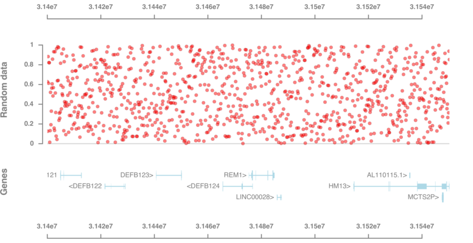

GViz.jl
Purpose
GViz.jl is a julia library to visualize genomic data using tracks. The library is implemented on top of the Cairo vector graphics library.
The user specifies track objects
GenomicAxisDataTrack(for x, y data)GeneTrack(for genes)
that are plotted to a PDF file using plotTracks.
Internally, each display consists of a number of nested reference frames. Each reference frame has a coordinate system and an environment for parameters. Both attributes and data are stored in the environment. A child reference frame is mapped onto its parent reference frame using scaling and translation transformations. When trying to look up an attribute in a reference frame's environment that does not exists there, its parents' environments are checked recursively.
Examples
using GViz
chrom_ = "chr20"
bpStart_ = 31400000
bpEnd_ = 31550229
gp = GenomicAxis(;height=1cm, margin_top = 8mm)
gt = GeneTrack(chrom_, bpStart_, bpEnd_)
dt = DataTrack(x = range(bpStart_, bpEnd_, length=1000), y = rand(1000),
ymin = -0.05, ymax = 1.05, title = "Random data", height=5cm )
plotTracks([gp, dt, gt, gp], "/tmp/test1.pdf", bpStart_, bpEnd_;
defaultparams..., width=20cm)
using GViz
using GorJulia
chrom_ = "chr20"
bpStart_ = 31400000
bpEnd_ = 31550229
gp = GenomicAxis(;height=1cm, margin_top = 8mm)
gt = GeneTrack(chrom_, bpStart_, bpEnd_)
hmeth = GorFile(GViz.pkgpath("data", "PofO_ASM.gor");
first = (chrom_, bpStart_), last = (chrom_, bpEnd_)) |> Tables.columns
hmt = DataTrack(x = hmeth[:Pos],
layers = [Dict(:y => hmeth[:mfrac], :fill => "blue"),
Dict(:y => hmeth[:pfrac], :fill => "red")],
ymin=0, ymax = 1, title="ASM",
size=1, margin_top=0mm, color="white")
zt = DataTrack(x = hmeth[:Pos], y = -log10.(hmeth[:pval]),
ymin=0, ymax = 20, title="ASM -log10(p)",
size=1, margin_top=0mm, geom = :col, color = "darkblue")
plotTracks([gp, zt, hmt, gt], "/tmp/test2.pdf", bpStart_, bpEnd_; defaultparams..., width=25cm)

API
GViz.GenomicAxis — TypeGenomicAxis(;params...)Create a genomic axis for the track plots.
Parameters
:axis_line_width:axis_color:axis_font:axis_tick_length:widthwidth of track:heightheight of track:margin_top:margin_bottom:margin_left:margin_right
GViz.DataTrack — TypeDataTrack(;params...)Create a data track consisting of one or multiple layers.
Layer parameters
Layers use a Grammar of Graphics like approach, i.e. the user can specify aesthetics, geometry, and scale using the following parameters
:x:y:color:fill:size:linetype:alpha:shape:asterisk:circle:cross:diamond:dot:plus:square:triangle:down-triangle:right-triangle:left-triangle
:geom:point:line:col
If a single layer is used, the parameters are specified directly. If multiple layers are used, the parameters for each layer are specified in a separate dictionary, and a vector of layer dictionaries can be supplied as parameter :layers.
Track parameters
The following parameters affect the track as a whole
:titletrack title:title_color:title_font:yminminimum y-value to plot, ornothing:ymaxmaximum y-value to plot, ornothing:axis_line_width:axis_color:axis_font:axis_tick_length:base_line_yy-coordinates for horizontal line, ornothing:base_line_color:base_line_width:widthwidth of track:heightheight of track:margin_top:margin_bottom:margin_left:margin_right
GViz.GeneTrack — FunctionGeneTrack(chrom, bpStart, bpEnd;
gtf = GViz.pkgpath("data", "gencode.v35.annotation.gtf.bgz"),
params...)Create a track with genes based on GTF file gtf.
Parameters
:gtfpath to tabix-indexed GTF file with genes:feature_label_spacing:feature_label_font:feature_label_color:feature_height:feature_fill:titletrack title:title_color:title_font:widthwidth of track:heightheight of track:margin_top:margin_bottom:margin_left:margin_right
GViz.plotTracks — FunctionplotTracks(tracks::Vector{T}, path, xmin, xmax;
track_spacing = 5mm, params...)Plot tracks into PDF file at path.